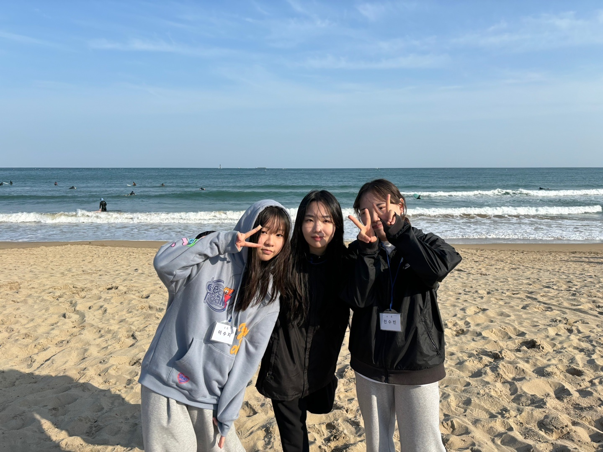
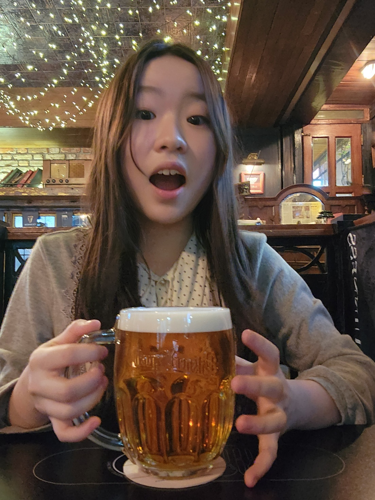
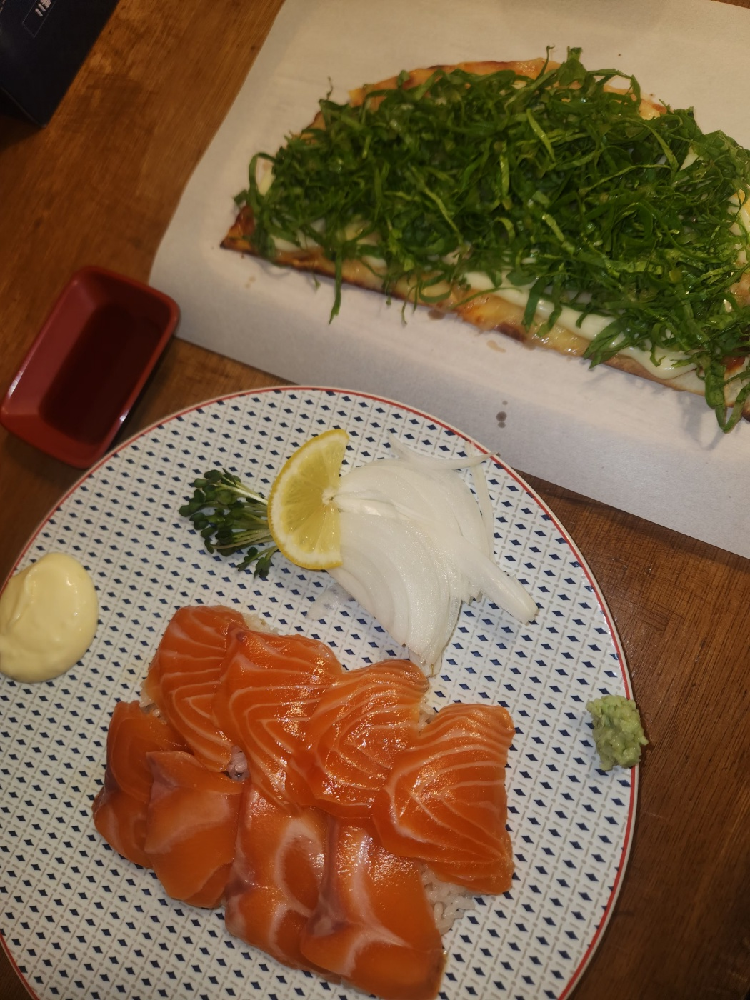
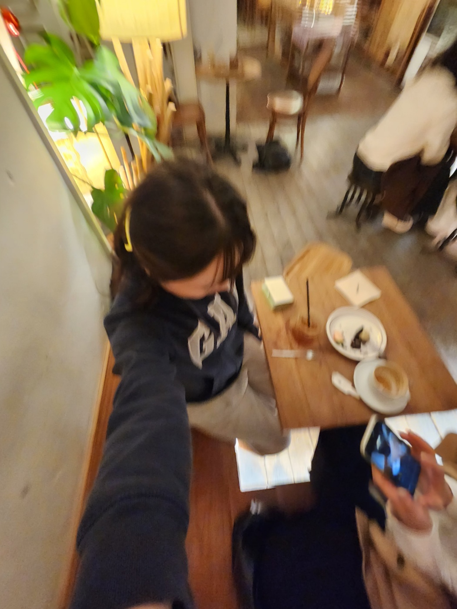
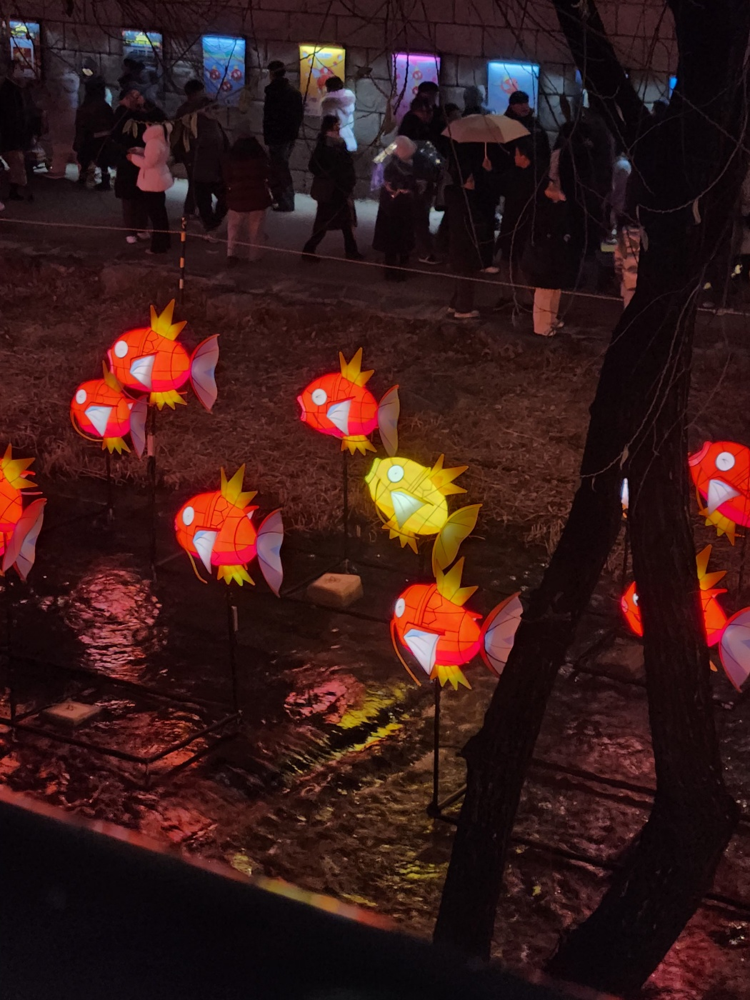
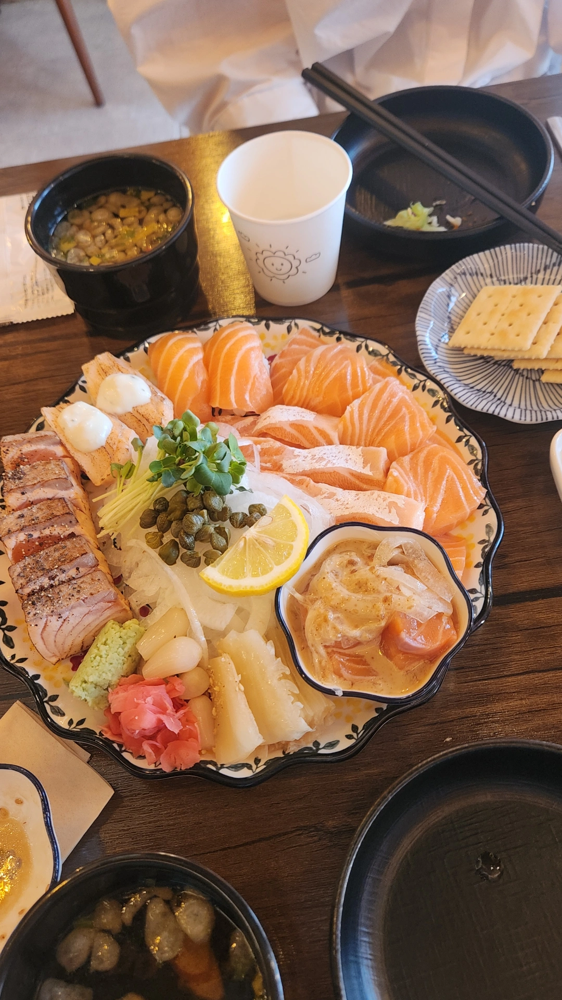
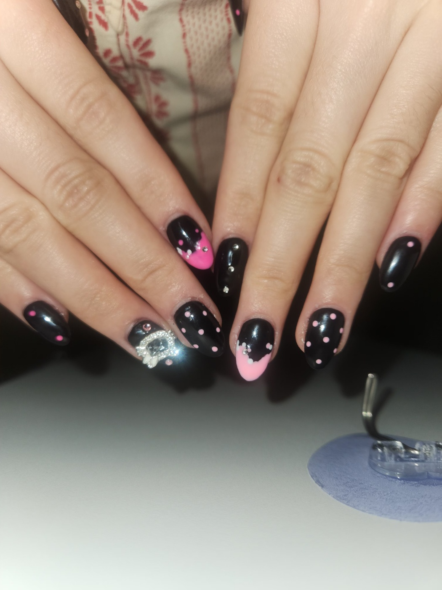
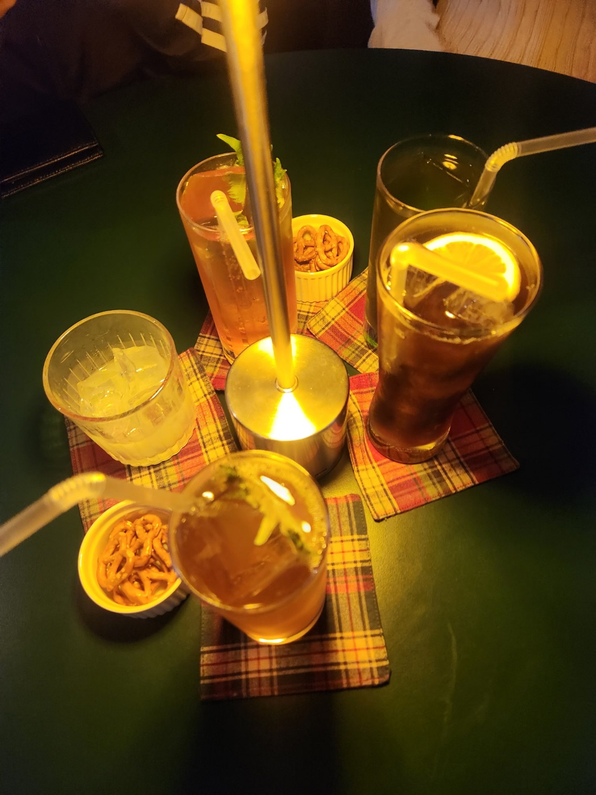
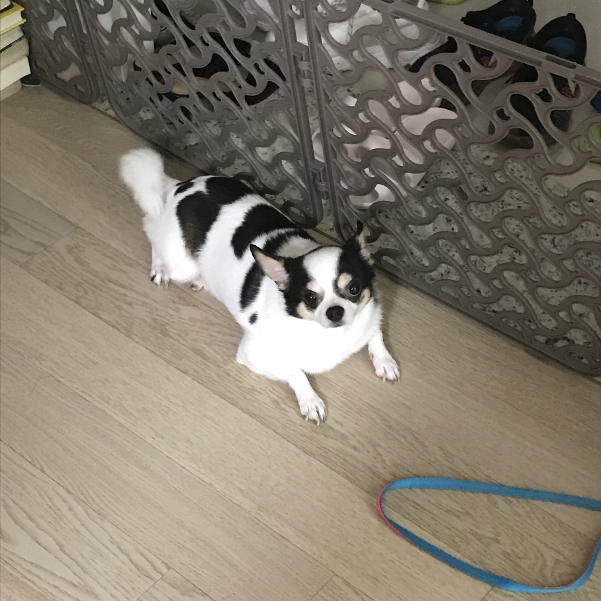

비닐하우스
비닐하우스에 살며 요양보호사 일을 하는 주인공 '문정'이 치매 노인을 돌보다가 사고가 발생합니다. 순간의 선택으로 인한 비극을 보여주는 영화입니다. 사회의 다양한 약자들이 처참하게 무너지는 모습에서 느껴지는 현실적인 공포가 오래 기억에 남았습니다.
연어 먹고 싶다
스스로에 대해 끊임없이 성찰하고, 그 속에서 성장의 방향을 찾아가는 사람입니다! 인프라와 지식 공유 활동을 좋아합니다. 티스토리 방문은 사랑입니다~
Tistory GitHub| 이름 | 이수지 |
|---|---|
| MBTI | ENTP |
| 취미 | 스케이트보드 |
| 좋아하는 음식 | 연어 |
내가 좋아하는 기억들









비닐하우스에 살며 요양보호사 일을 하는 주인공 '문정'이 치매 노인을 돌보다가 사고가 발생합니다. 순간의 선택으로 인한 비극을 보여주는 영화입니다. 사회의 다양한 약자들이 처참하게 무너지는 모습에서 느껴지는 현실적인 공포가 오래 기억에 남았습니다.
영상미와 수록된 노래들이 제 취향이라서 좋아하는 영화입니다.
오늘 새롭게 배운 것들을 기록합니다.
header, nav, main, section, article, footer 등 시멘틱 태그의 역할과 사용법을 배웠다.